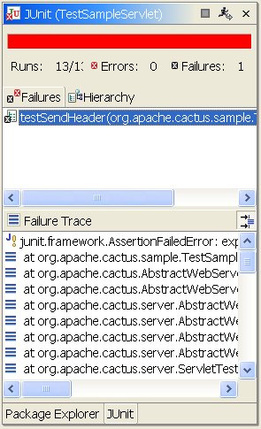

The Eclipse plug-in for Cactus is a runner for server-side unit tests. It is intended to hide the complexity of setting up an environment for running Cactus tests. It supports a variety of commercial and open-source application servers (better called containers).





In order to release a production-quality tool some features are needed.
See the todo section on the Cactus framework page for a list of remaining features
The Cactus framework extends JUnit. The Cactus plugin for Eclipse extends in a certain manner the existing JUnit plugin. For example JUnitLaunchShortcut is overloaded to be able to:
The plugin uses Ant scripts from the Ant integration subproject for container management.
A preference page is contributed to the Eclipse preferences. It shows the following entries:
To enable different ways to setup, start, and stop containers the idea of container providers has been introduced in the plugin.
A container provider is responsible for deploying a web application to the container, starting and stopping it, and undeploying the web app. This concept is concretized in the interface IContainerProvider . See its javadoc for more information.
A container manager is implemented in the current version of the plugin, which uses Ant scripts to carry out these actions. It is called AntContainerManager and may be used to execute tests on all the containers supported by the Ant integration subproject.
The launch(IType theType, String theMode) method of the CactusLaunchShortcut class is called, which sets up the container, launches the tests by delegating these to the JUnit plugin, and then tears down the container setup.
This includes:
In the case of AntContainerProvider :
This behaviour is inherited from the JUnit plugin since CactusLaunchShortcut extends JUnitLaunchShortcut .
To know when tests have ended we register our TestListener to the JUnit plugin. To this end the JUnit plugin needed a modification which has been integrated in the 2.1 release of the Eclipse platform.
After the tests have completed we stop the container, and delete the configuration and war files created beforehand.
Read the Eclipse development evironment setup tutorial.